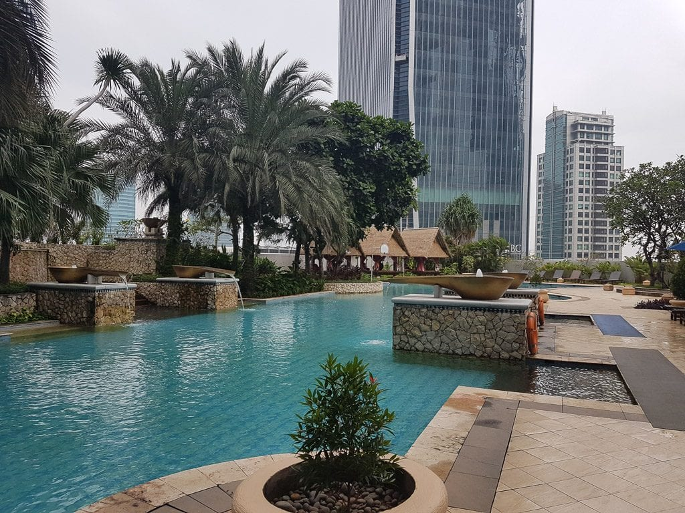
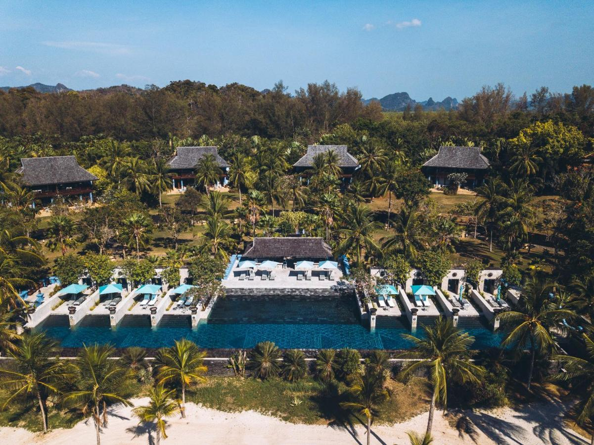
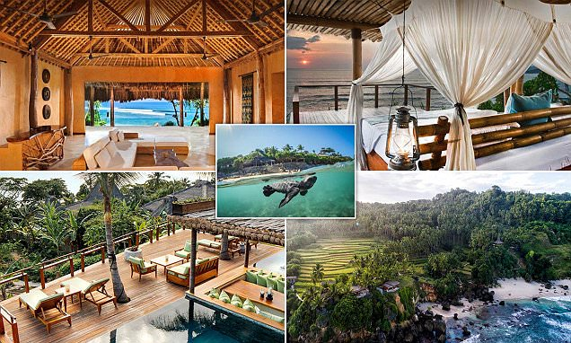
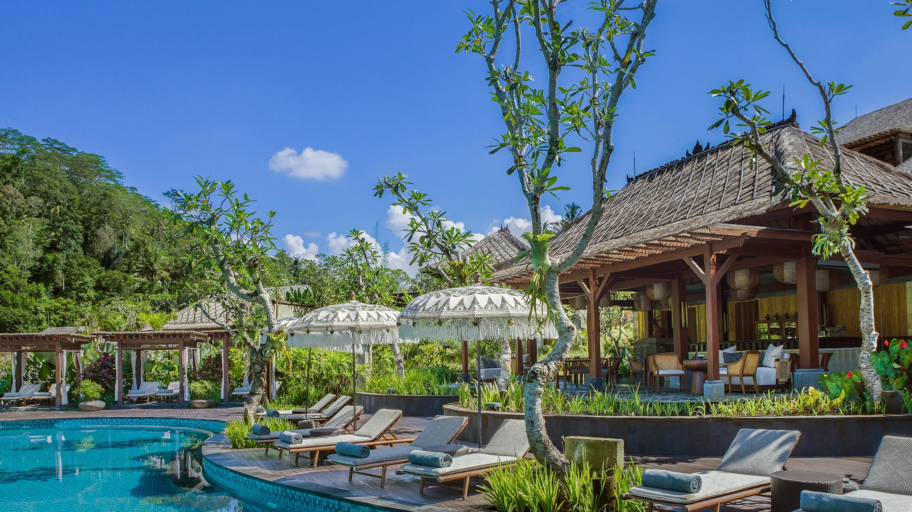

Hotel Favorit di Indonesia
Ayana Resort and Spa, Bali

Alamat: Jl. Karang Mas Sejahtera, Jimbaran, Bali 80364, Indonesia
Fasilitas:
- Kamar mewah dengan pemandangan laut
- Pantai pribadi
- 12 kolam renang termasuk kolam renang infinity yang ikonik
- Spa di atas tebing dengan pemandangan laut
- Restoran internasional dan bar
- Lapangan golf mini dan lapangan tenis
Harga: Mulai dari Rp 4.500.000 per malam
Ayana Resort and Spa terletak di atas tebing Jimbaran yang menakjubkan, menawarkan pemandangan laut yang luar biasa dan pengalaman menginap mewah. Dikenal dengan layanan yang luar biasa, resor ini memiliki berbagai fasilitas termasuk pantai pribadi, 12 kolam renang, dan spa di atas tebing yang terkenal. Restoran internasional dan bar di resor ini menyajikan berbagai hidangan lezat.
The Ritz-Carlton, Jakarta
Alamat: Jl. DR. Ide Anak Agung Gde Agung Kav.E.1.1 No.1, Mega Kuningan, Jakarta 12950, Indonesia
Fasilitas:
- Kamar dan suite mewah
- Restoran dan bar kelas atas
- Spa dengan berbagai perawatan
- Kolam renang luar ruangan
- Pusat kebugaran lengkap
- Ruang pertemuan dan ballroom
Harga: Mulai dari Rp 3.000.000 per malam
The Ritz-Carlton Jakarta menawarkan kemewahan dan kenyamanan di jantung ibu kota Indonesia. Hotel ini memiliki kamar dan suite yang luas dengan fasilitas modern, serta spa yang menawarkan berbagai perawatan relaksasi. Restoran dan bar di hotel ini menyajikan hidangan internasional dan lokal yang lezat. Dengan lokasi strategis di kawasan bisnis Mega Kuningan, hotel ini cocok untuk pelancong bisnis dan rekreasi.
Four Seasons Resort, Sayan, Bali
Alamat: Sayan, Ubud, Bali 80571, Indonesia
Fasilitas:
- Villa dengan kolam renang pribadi
- Pemandangan hutan tropis dan sungai Ayung
- Spa holistik
- Restoran dengan masakan lokal dan internasional
- Kelas yoga dan meditasi
- Jalur trekking dan kegiatan alam lainnya
Harga: Mulai dari Rp 10.000.000 per malam
Four Seasons Resort Sayan terletak di tengah hutan tropis di Ubud, menawarkan pengalaman menginap yang damai dan mewah. Setiap villa dilengkapi dengan kolam renang pribadi dan pemandangan yang menakjubkan. Resort ini menawarkan berbagai aktivitas alam, kelas yoga dan meditasi, serta spa holistik yang menyegarkan. Restoran di resort ini menyajikan masakan lokal dan internasional yang lezat.
Nihi Sumba, Sumba
Alamat: Desa Hobawawi, Wanokaka, Sumba Barat, Nusa Tenggara Timur, Indonesia
Fasilitas:
- Villa mewah dengan pemandangan laut
- Pantai pribadi
- Aktivitas selancar kelas dunia
- Perjalanan berkuda di pantai
- Spa di tepi laut
- Restoran dengan masakan lokal dan internasional
Harga: Mulai dari Rp 13.000.000 per malam
Nihi Sumba adalah resor eksklusif yang terletak di pulau Sumba yang indah. Resor ini terkenal dengan pantai pribadinya dan aktivitas selancar kelas dunia. Setiap villa mewah menawarkan pemandangan laut yang menakjubkan dan kenyamanan maksimal. Nihi Sumba juga menawarkan berbagai aktivitas, termasuk perjalanan berkuda di pantai, trekking, dan spa di tepi laut. Restoran di resor ini menyajikan hidangan lezat yang dibuat dengan bahan-bahan lokal segar.
Mandapa, A Ritz-Carlton Reserve, Bali
Alamat: Jl. Raya Kedewatan, Banjar Kedewatan, Ubud, Bali 80571, Indonesia
Fasilitas:
- Villa dengan kolam renang pribadi dan pemandangan sawah
- Spa dan pusat kebugaran
- Restoran dengan masakan organik dan internasional
- Kelas yoga dan meditasi
- Pemandangan sawah dan sungai Ayung
- Program kegiatan anak-anak
Harga: Mulai dari Rp 9.000.000 per malam
Mandapa, A Ritz-Carlton Reserve, terletak di Ubud dan menawarkan pengalaman menginap yang tenang dan mewah di tengah sawah dan sungai Ayung. Setiap villa dilengkapi dengan kolam renang pribadi dan pemandangan yang menakjubkan. Spa dan pusat kebugaran di hotel ini menawarkan perawatan yang menenangkan, sementara restoran menyajikan masakan organik dan internasional. Hotel ini juga menyediakan berbagai kegiatan budaya dan alam untuk tamu.